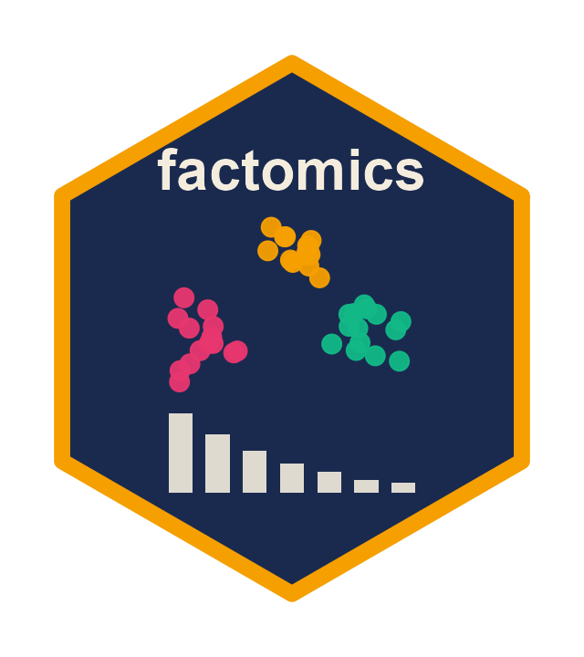
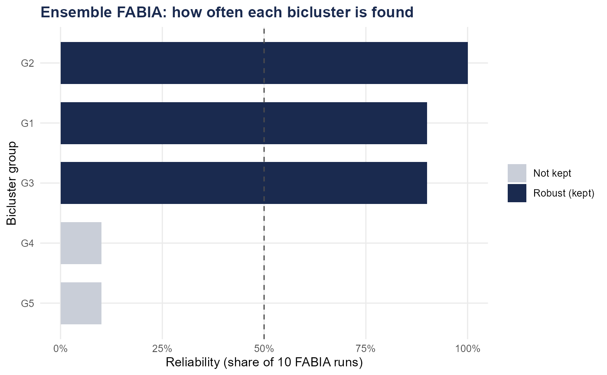

Plot the reliability of ensemble FABIA biclusters
Source:R/fabia_ensemble.R
plot_fabia_ensemble.RdShows every group of biclusters found by ensemble FABIA, ordered by
reliability (the share of runs in which it was found), with the groups
kept as robust factors highlighted and the min_reliability cut-off as a
dashed line. Groups found in only one or a few runs are the
start-dependent, unstable biclusters a single FABIA run may report.
Arguments
- x
The output of
fabia_ensemble(), or afactomics_resultsobject containing a"FABIA_ENS"fit.- top
Number of groups to show (default
25).
Examples
# \donttest{
if (requireNamespace("fabia", quietly = TRUE)) {
sim <- simulate_multiomics(n_samples = 40, seed = 1)
fit <- fabia_ensemble(sim$data, k = 3, cyc = 200, verbose = FALSE,
control = fabia_ensemble_control(runs = 10))
plot_fabia_ensemble(fit)
}

# }